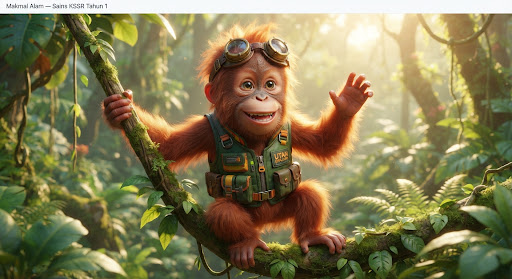
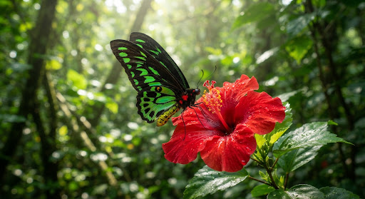
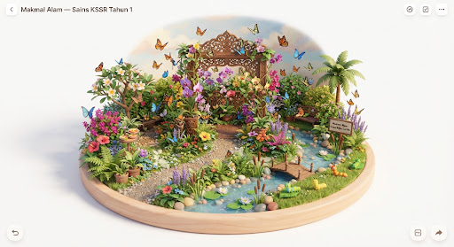

science
KSSR SAINS TAHUN 1
psychology
2 / 6 Selesai
Makmal Alam Ajaib 🔬
Eksperimen 3 drp 6: Kenali Benda Hidup vs Benda Bukan Hidup & 5 Deria Ajaib
Kemajuan Makmal Rimba
50% Selesai

travel_explore
support_agent
Sahabat Peneroka
“Hai Wira Adam! Mari kaji rama-rama & batu sungai ini. Adakah ia memerlukan makanan dan boleh bernafas untuk membesar?”
psychology_alt
CABARAN 2 DRP 4
eco
Santai & Teliti
Kelaskan Objek Alam Rimba: Adakah ia Benda Hidup atau Benda Bukan Hidup?
Perhatikan spesimen di bawah kaca pembesar makmal pokok!

search_check
Spesimen: Rama-Rama Rajah Brooke
local_florist
Bunga Raya Madu
tips_and_updates
Petunjuk Pemerhatian Saintis:
Rama-Rama Rimba 🦋 = Perlu Makanan + Boleh Bergerak Sendiri + Membesar
nature_people
💡 Petua Saintis Utan:
Benda hidup seperti rama-rama, pokok durian, dan Wira Adam perlukan makanan, air, dan udara untuk terus hidup!
🗺️ Peta Eksperimen Makmal Alam
6 Unit KSSRLengkapkan setiap ujian makmal untuk mengumpul ramuan klorofil ajaib!
done_all
Unit 1: Kemahiran Saintifik & Memerhati
Selesai • 3 Bintang
star
star
star
done_all
Unit 2: 5 Deria Manusia & Penglihatan
Selesai • 3 Bintang
star
star
star
biotech
Unit 3: Benda Hidup & Bukan Hidup
Sedang Dijalankan (Cabaran 2/4)
lock
Unit 4: Bahagian Tubuh Haiwan
Kucing, Burung & Ikan Rimba
lock
Unit 5: Bahagian Tumbuhan
Daun, Batang & Akar Pokok
lock
Unit 6: Magnet & Objek Penarik Ajaib
Daya Tarikan Magnetik
domain_add
PROJEK KAMPUNG WIRA
Ganjaran Eksperimen 3

spaTaman Bunga Rama-Rama
Membina taman konservasi flora tropika & tempat penetasan rama-rama di tepi rumah wira!
star
+50 Bintang
eco
+120 Klorofil